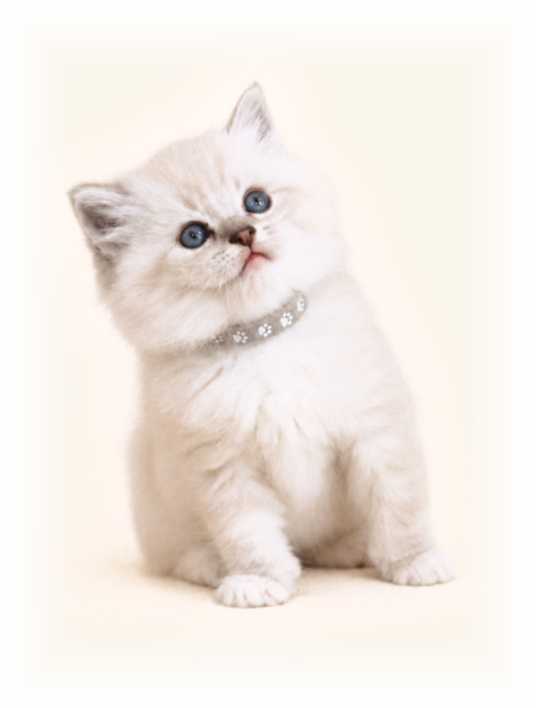
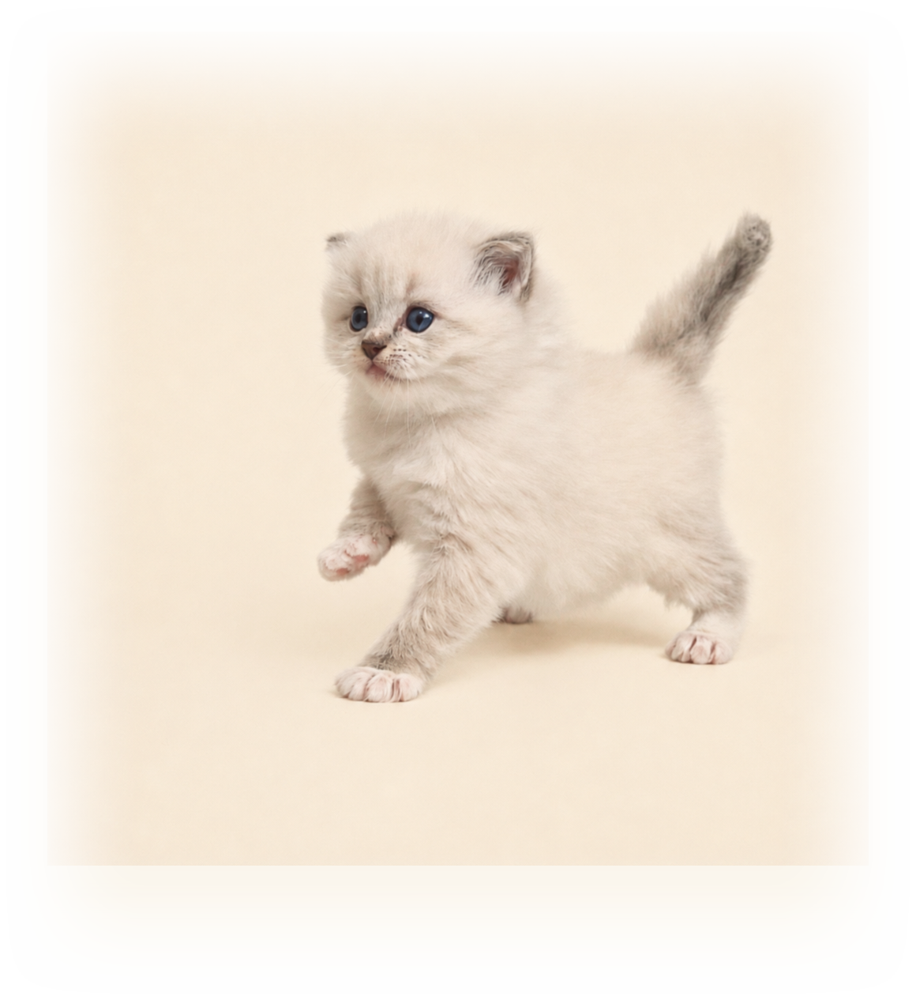

Der Weg zu einem Kätzchen
Vom ersten Kontakt bis zu dem Moment, in dem Sie Ihren Ragdoll nach Hause holen.


Der Weg zu Ihrem Kätzchen
Kontakt und Kennenlernen
Sie schreiben uns über das Formular, wir besprechen Ihre Wünsche und die Verfügbarkeit der Kätzchen.
Reservierung
Ihr ernsthaftes Interesse an einem Kätzchen aus dem Wurf bestätigen wir mit einer nicht rückerstattbaren Bearbeitungsgebühr von 1.000 CZK für die Reservierung eines Platzes im jeweiligen Wurf. Mit ihrer Zahlung haben Sie die Gewissheit, dass Ihnen aus diesem Wurf ein Kätzchen zugeteilt wird. Nach Zahlungseingang vereinbaren wir mit Ihnen einen persönlichen Besuch und das weitere Vorgehen.
Nach dem Besuch und der Auswahl eines konkreten Kätzchens wird die bereits gezahlte Bearbeitungsgebühr bei bestätigter Reservierung in voller Höhe auf die Anzahlung des Kaufpreises angerechnet. Anschließend schließen wir gemeinsam einen Reservierungsvertrag ab.
Möchten Sie ein konkretes Kätzchen bereits vor dem persönlichen Besuch reservieren, ist das nach vorheriger Absprache ebenfalls möglich. In diesem Fall entfällt die Bearbeitungsgebühr von 1.000 CZK, stattdessen gilt die im Reservierungsvertrag festgelegte Standardanzahlung für das jeweilige Kätzchen.
Die Bedingungen der Bearbeitungsgebühr und der Reservierung eines Wurfplatzes sind in einem gesonderten Vertrag festgehalten, den wir Ihnen vor der Zahlung gerne zur Ansicht zusenden. Bei der Reservierung eines konkreten Kätzchens erhalten Sie den Reservierungsvertrag vor der Anzahlung, damit alle Bedingungen von Anfang an klar und transparent geregelt sind.
Warten auf das neue Zuhause
Während der Wartezeit halten wir Sie auf dem Laufenden, wie es Ihrem Kätzchen geht. Sie erhalten Fotos, Videos sowie Informationen von tierärztlichen Untersuchungen und gegebenenfalls zum Verlauf der Kastration und der anschließenden Genesung.
Vor der Ankunft Ihres Kätzchens bekommen Sie außerdem eine Checkliste zur Vorbereitung Ihres Zuhauses sowie Tipps, wie Sie Ihrem Kätzchen die ersten Tage im neuen Zuhause möglichst leicht machen.
Und falls Ihnen das Warten lang vorkommt, schreiben Sie uns einfach — wir schicken gerne weitere Fotos oder ein Video. 🐾
Abreise ins neue Zuhause
Ihr Kätzchen verlässt uns im Alter von 14–16 Wochen, sobald es bereit für das selbstständige Leben ist, tierärztlich ordnungsgemäß untersucht wurde und für die ersten Tage ausgestattet ist. Vor der Abreise besprechen wir gemeinsam alle wichtigen Informationen und vereinbaren die Übergabe.
Und damit endet unsere Fürsorge nicht.
Auch nach der Abreise stehen wir Ihnen für Fragen, Ratschläge und den Austausch von Erfahrungen aus dem neuen Zuhause zur Verfügung. Wir freuen uns außerdem sehr über Fotos und Neuigkeiten, wie es unserem ehemaligen Schützling geht.
Was Ihr Kätzchen bekommt
- Kätzchen als Haustiere sind 2× geimpft
- Entwurmt
- Mikrochip und Pass
- Kastriert
- Registriert mit Stammbaum
- Kaufvertrag
- Starterpaket — gewohntes Futter, Lieblingsspielzeuge und ein Kratzkarton Ekomazlíček